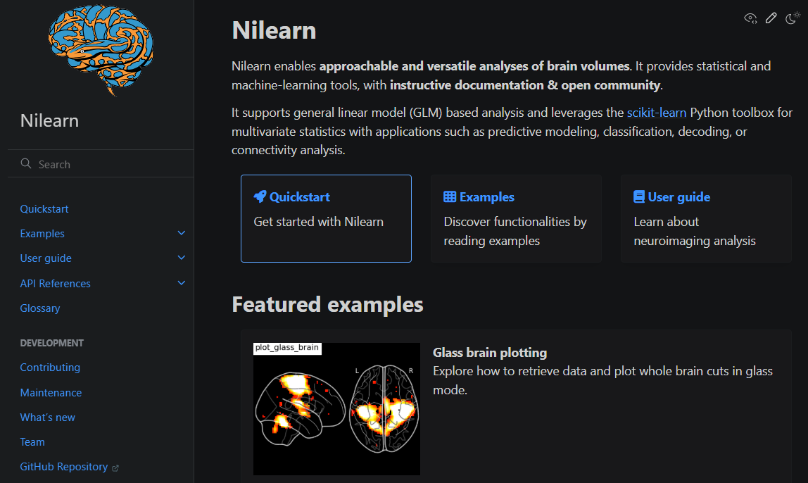
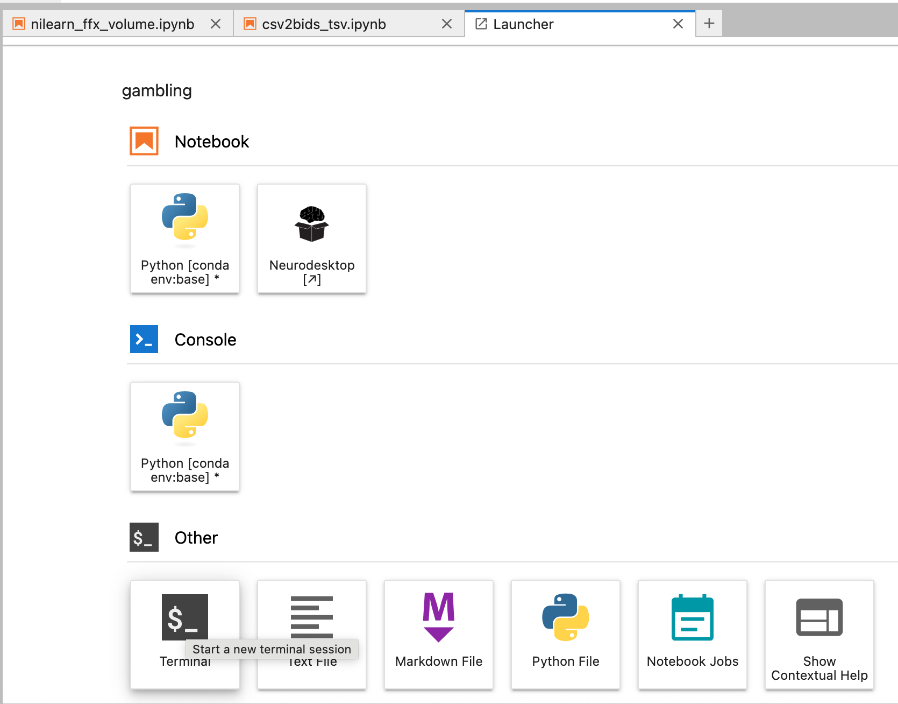

5 General linear model analysis
of fMRI data
Analysis phases
Single-subject - first level - fixed effects analysis (FFX)
Group - second-level - random effects analysis (RFX)
This is equivalent to e.g. conducting many trials per subject to measure reaction time, and then compute a subject-specific mean per condition, after which you would perform the actual statistical inference
Multilevel modelling is also possible (for small datasets), but less frequent.
For a general overviewo of basic GLM analysis, see Introduction to fMRI
Before analysis
Pick your analysis space
Decide whether/how/how much to smooth the data
Software


Preprocessing used to be integrated into the software used for the actual analysis. And there are many software for this. On this slide I just put a few of them. Each of them has a slightly different phylosophy behind it, but all of them do roughly the same thing, so at the end it should not matter much which of them you use.
One of the oldest ones are:
SPM – statistical parameteric mapping from UCL. It is a free MATLAB-based toolbox. However, it depends on the MATLAB licence, and has not been updated for a long time. The new update just came out which spans the gab from 2012 to 2025 (Tierney et al. 2025).
AFNI - from NIH
FSL from Oxford – a set of linux tools, also free and independent of MATLAB, which is an advantage, but requires Linux.
FreeSurfer/FSFAST form the Martinos center - it is Linux based, and was originally conceived as a tool for structural data analysis, but has an fMRI module
Historical software
- broccolli, that can utilize GPU computing and can process the same dataset n times faster
With the awareness of open science, and with the trend towards reproducibility and transparency, and with the release of fMRIprep software, the preprocessing got detached from the actual data analysis.
Nilearn

https://nilearn.github.io/stable/index.html
Ingredients
fMRIprep output
events files in bids format, located in the same directory as the raw functional data
you can copy them to your folder with the following terminal command
rsync -a -v /shared/2025_SS_SE_ANI/gambling/tsv_behr_data /home/jovyan/gambling/A zip archive is also attached to the moodle assigment
Install nilearn
Open the terminal window

type:
pip install nilearnand wait until the installation finishes
Run the analysis
Open the jupyter notebook nilearn_ffix_volume.ipynb
you can copy it with the following terminal command
rsync -a -v /shared/2025_SS_SE_ANI/gambling/nilearn_ffx_volume.ipynb /home/jovyan/gambling/a copy is also attached to the moodle assignment
try to run the analysis in the MNI space
Feel free to play around with the parameters and visualization options